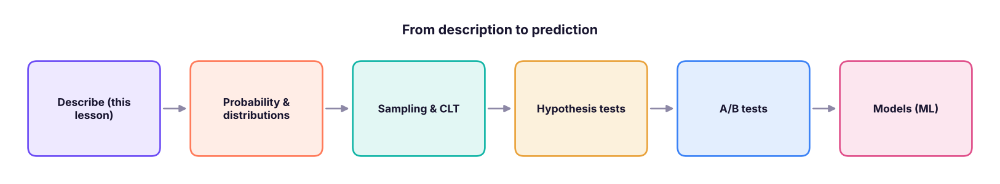
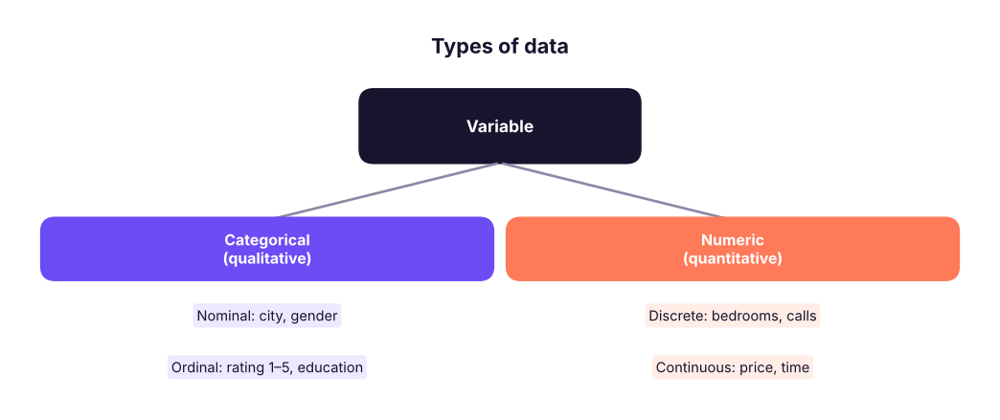
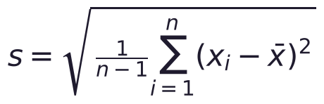
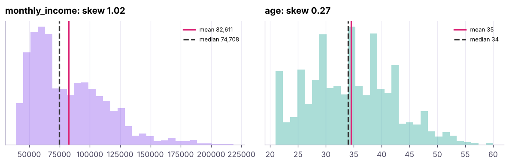
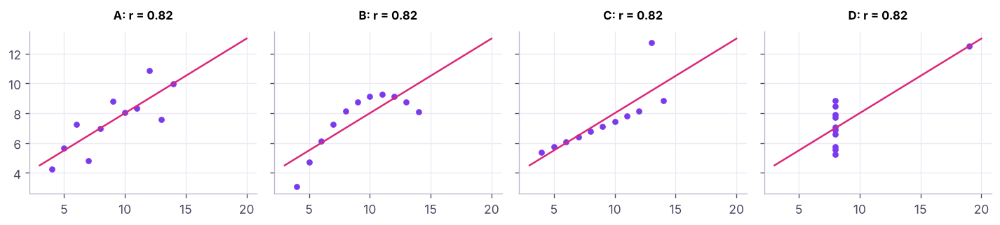

Descriptive Statistics: Centre, Spread, Shape and Relationships
Describe data with numbers before modelling it. Types of data and measurement scales, mean, median and mode, range, variance, standard deviation, IQR and coefficient of variation, percentiles and z-scores, skewness and kurtosis, covariance and correlation (Pearson and Spearman), all on the house-price and HR datasets.
- Classify variables as categorical (nominal, ordinal) or numeric (discrete, continuous; interval, ratio)
- Compute and interpret mean, median, mode, weighted mean and trimmed mean
- Compute and interpret range, IQR, variance, standard deviation and coefficient of variation
- Use percentiles and z-scores and describe skewness and kurtosis
- Measure association with covariance, Pearson and Spearman correlation, and explain why correlation is not causation
Statistics in data science
Descriptive statistics summarise the data you have. Inferential statistics use a sample to draw conclusions about a larger population (next lessons). Machine learning builds on both.

Types of data

| Scale | Has order? | Equal intervals? | True zero? | Example | Allowed statistics |
|---|---|---|---|---|---|
| Nominal | No | – | – | City | Mode, counts |
| Ordinal | Yes | No | – | Satisfaction 1–4 | Median, percentiles |
| Interval | Yes | Yes | No | Temperature °C | Mean, sd (no ratios) |
| Ratio | Yes | Yes | Yes | Income, price | Everything, including ratios |
Measures of centre
import pandas as pd, numpy as np
from scipy import stats
h = pd.read_csv("house_prices.csv")
p = h["price_lakh"]
print(f"mean {p.mean():.1f} | median {p.median():.1f} | mode (rounded to 10) {(p.round(-1)).mode()[0]:.0f} | trimmed mean 10% {stats.trim_mean(p, 0.1):.1f}")
print("bedrooms mode:", h["bedrooms"].mode().tolist(), "| city mode:", h["city"].mode()[0])
w = pd.DataFrame({"city_avg_price": [62, 88, 75], "houses": [100, 20, 50]})
print("simple mean of city averages:", w.city_avg_price.mean().round(1), "| weighted mean:", np.average(w.city_avg_price, weights=w.houses).round(1))mean 80.4 | median 78.9 | mode (rounded to 10) 80 | trimmed mean 10% 78.9 bedrooms mode: [2] | city mode: Bengaluru simple mean of city averages: 75.0 | weighted mean: 68.9
| Measure | Use when | Sensitive to outliers? |
|---|---|---|
| Mean | Symmetric numeric data; totals matter | Yes |
| Median | Skewed data (income, prices), ordinal data | No |
| Mode | Categories, most common value | No |
| Trimmed mean | Want a mean but robust to extremes | Less |
| Weighted mean | Groups of different sizes | Depends |
salaries = pd.Series([40, 42, 45, 47, 50, 52, 55, 60, 65, 900]) # one CEO in thousands
print(f"mean {salaries.mean():.1f}K vs median {salaries.median():.1f}K: one extreme value moves the mean, not the median")mean 135.6K vs median 51.0K: one extreme value moves the mean, not the median
Measures of spread
def spread(x):
q1, q3 = x.quantile([.25, .75])
return pd.Series({"range": x.max() - x.min(), "IQR": q3 - q1, "variance": x.var(), "std": x.std(), "CV_%": 100 * x.std() / x.mean(), "MAD": (x - x.median()).abs().median()})
print(pd.DataFrame({"price_lakh": spread(p), "area_sqft": spread(h["area_sqft"].dropna()), "age_years": spread(h["age_years"])}).round(1))price_lakh area_sqft age_years range 518.0 2130.0 29.0 IQR 42.2 580.0 15.0 variance 1261.9 158572.6 74.2 std 35.5 398.2 8.6 CV_% 44.2 32.1 59.8 MAD 21.0 290.0 7.0
- Variance = average squared distance from the mean; standard deviation (sd) = its square root, in the original units.
- pandas
.std()uses the sample formula (divide by n − 1, Bessel's correction); NumPynp.stddefaults to population (n). - Coefficient of variation (CV = sd ÷ mean) compares spread across variables with different units.
- IQR (Q3 − Q1) is the spread of the middle 50%, robust to outliers.

Percentiles, z-scores and the five-number summary
print(p.quantile([0, .1, .25, .5, .75, .9, 1]).round(1).to_dict())
z = (p - p.mean()) / p.std()
print(f"a ₹150 lakh house has z = {(150 - p.mean()) / p.std():.2f} | {(z.abs() > 2).mean():.1%} of houses are beyond ±2 sd")
print(f"percentile rank of ₹150 lakh: {stats.percentileofscore(p, 150):.1f}"){0.0: 2.0, 0.1: 40.5, 0.25: 57.3, 0.5: 78.9, 0.75: 99.4, 0.9: 120.1, 1.0: 520.0}
a ₹150 lakh house has z = 1.96 | 1.7% of houses are beyond ±2 sd
percentile rank of ₹150 lakh: 98.2A z-score says how many standard deviations a value is from the mean: it puts different variables on one scale (used in standardisation for ML).
Shape: skewness and kurtosis

for col in ["monthly_income", "age", "years_at_company", "distance_from_home_km"]:
x = hr[col]; print(f"{col:24s} skew {x.skew():6.2f} | excess kurtosis {x.kurt():6.2f} | mean {x.mean():10,.1f} | median {x.median():10,.1f}")
print("log(income) skew:", round(np.log(hr.monthly_income).skew(), 2))monthly_income skew 1.02 | excess kurtosis 0.95 | mean 82,610.7 | median 74,708.5 age skew 0.27 | excess kurtosis -0.39 | mean 34.5 | median 34.0 years_at_company skew 1.55 | excess kurtosis 3.00 | mean 3.8 | median 3.0 distance_from_home_km skew 0.00 | excess kurtosis -1.26 | mean 15.2 | median 15.0 log(income) skew: 0.28
| Skewness | Shape | Mean vs median |
|---|---|---|
| ≈ 0 | Symmetric | Mean ≈ median |
| > 0 | Right (positive) skew, long right tail | Mean > median |
| < 0 | Left skew | Mean < median |
Kurtosis describes tail heaviness (excess kurtosis 0 = normal; positive = more extreme values). A log transform often makes right-skewed money variables more symmetric.
Relationships: covariance and correlation
num = h[["price_lakh", "area_sqft", "bedrooms", "age_years", "distance_to_center_km"]].dropna()
print("covariance price-area:", round(num.price_lakh.cov(num.area_sqft), 1), "(units: lakh × sq ft, hard to interpret)")
print(num.corr().round(2)["price_lakh"].sort_values(ascending=False))
print("Spearman (rank):", num.corr(method="spearman").round(2)["price_lakh"].drop("price_lakh").to_dict())
r, pval = stats.pearsonr(num.area_sqft, num.price_lakh); print(f"Pearson r = {r:.3f}, p-value = {pval:.1e}")covariance price-area: 11182.8 (units: lakh × sq ft, hard to interpret)
price_lakh 1.00
area_sqft 0.79
bedrooms 0.58
distance_to_center_km -0.07
age_years -0.11
Name: price_lakh, dtype: float64
Spearman (rank): {'area_sqft': 0.9, 'bedrooms': 0.68, 'age_years': -0.13, 'distance_to_center_km': -0.06}
Pearson r = 0.787, p-value = 3.3e-248- Pearson r measures linear association (−1 to +1). Rough guide: |r| < 0.3 weak, 0.3–0.7 moderate, > 0.7 strong.
- Spearman ρ correlates ranks: robust to outliers and captures monotonic non-linear relations.
- Cramér's V (categorical × categorical) and point-biserial (binary × numeric) cover other pairs.

Ice-cream sales and drowning both rise in summer (a confounder: temperature). Correlation can also come from reverse causation, selection bias or chance. Only experiments or careful causal methods show cause.
Summary
- Know the variable type and scale first: it decides valid statistics.
- Centre: mean (sensitive), median (robust), mode (categories); use weighted means for groups of different sizes.
- Spread: range, IQR (robust), variance and sd (sample uses n − 1), CV to compare variables.
- Shape: skewness (mean vs median), kurtosis (tails); log transforms reduce right skew.
- z-scores standardise; percentiles rank. Correlation (Pearson linear, Spearman rank) measures association, not causation; always plot.
1. Which is the best measure of centre for household income?
2. In a right-skewed distribution, which is usually true?
3. Why does the sample standard deviation divide by n − 1?
4. A z-score of −1.5 means…
5. Which correlation suits a monotonic but non-linear relationship?
6. What does Anscombe's quartet teach?
(1) Mean, median and sd of monthly_income by department; which department is most variable (CV)? (2) The 90th percentile of income. (3) The share of employees beyond ±3 sd of income. (4) Pearson and Spearman correlation between age and income. (5) Classify each column by type and scale.
Show solution
g = hr.groupby("department")["monthly_income"].agg(["mean", "median", "std"]); g["cv"] = g["std"] / g["mean"]; print(g.sort_values("cv"))
print(hr.monthly_income.quantile(.9))
zi = (hr.monthly_income - hr.monthly_income.mean()) / hr.monthly_income.std(); print((zi.abs() > 3).mean())
print(hr[["age", "monthly_income"]].corr().iloc[0, 1], hr[["age", "monthly_income"]].corr("spearman").iloc[0, 1])
# gender, department, city: nominal; education, job_satisfaction, performance_rating: ordinal; age, income: ratioQ: Mean vs median: when do you report each? Median for skewed data or outliers (income, house prices, delivery times); mean for symmetric data or when totals matter.
Q: What does a standard deviation of 0 mean? All values are identical.
Q: Correlation is 0. Are the variables independent? Not necessarily: Pearson only captures linear relationships; a perfect U-shape can have r = 0.
Practise more online
Free, trusted places to test yourself on this topic. Links open the original site in a new tab.